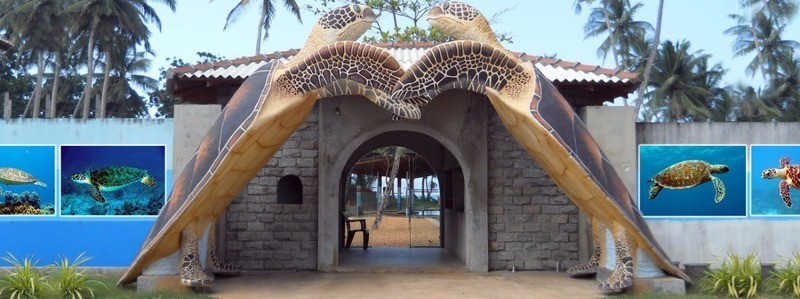
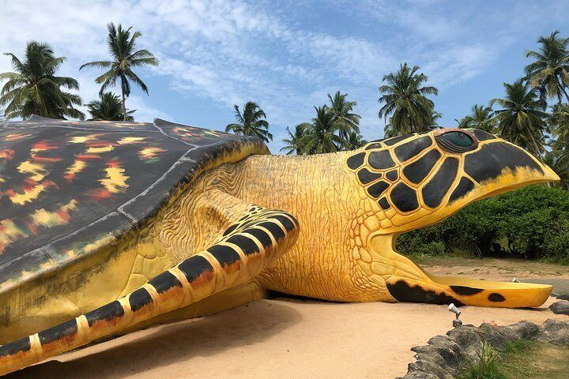
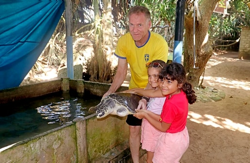
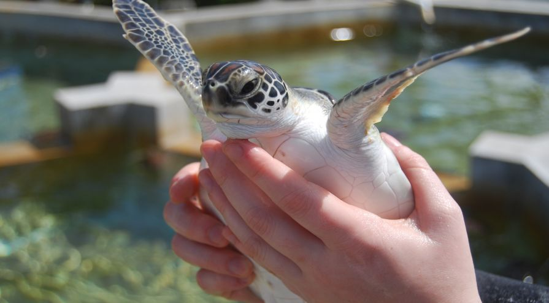

About
Kosgoda Turtle Hatchery
Kosgoda Turtle Hatchery is a conservation project that was established in 1981 by the Sri Lanka Wildlife Conservation Society. It is located in the town of Kosgoda, on the southwest coast of Sri Lanka. The hatchery is dedicated to the conservation of sea turtles, which are an endangered species due to habitat destruction, poaching, and accidental capture in fishing nets. The hatchery is responsible for collecting sea turtle eggs from nearby beaches and providing a safe place for them to hatch. The eggs are kept in a protected area where they can incubate safely until they hatch. Once the hatchlings emerge from their shells, they are kept in tanks until they are strong enough to be released into the ocean. Visitors to the Kosgoda Turtle Hatchery can observe the various stages of the hatching process, from the collection of the eggs to the release of the hatchlings into the ocean. The hatchery has a variety of tanks where visitors can observe adult sea turtles. The tanks are divided into sections based on the species of sea turtle and their age. Visitors can learn about the different species of sea turtles that are found in Sri Lanka, including the green turtle, hawksbill turtle, loggerhead turtle, olive ridley turtle, and leatherback turtle.

Kosgoda Turtle Hatchery: Museum
The Kosgoda Turtle Hatchery and Conservation Centre in Sri Lanka features a turtle museum that offers visitors an opportunity to learn about the endangered species of sea turtles and the centre's conservation efforts. The museum provides an insight into the life cycle and behavior of sea turtles, their ecological significance, and the challenges faced by these marine reptiles. The museum has a range of exhibits, including life-size models of sea turtles, informative posters, and videos, that showcase the conservation work of the hatchery. Visitors can learn about the hatchery's turtle breeding process, egg collection, and the release of hatchlings back into the ocean. The museum also displays the hatchery's successful efforts to rehabilitate injured turtles, with details about the medical treatments and care provided to these animals. Visitors can also learn about the conservation efforts by the hatchery to protect the nesting habitats of sea turtles along the southern coast of Sri Lanka. The interactive exhibits in the museum engage visitors of all ages and provide an educational experience that is both informative and entertaining. The centre's knowledgeable staff is available to answer questions and provide more in-depth information about the exhibits.


Kosgoda Turtle Hatchery: Rehabilitation
The Kosgoda Turtle Hatchery and Conservation Centre in Sri Lanka is a non-profit organization that is dedicated to the conservation and rehabilitation of sea turtles. The hatchery is home to five different species of sea turtles and offers a range of rehabilitation programs to injured and sick turtles. The rehabilitation program at the hatchery includes medical treatment, care, and observation of the turtles until they are healthy enough to be released back into the ocean. The hatchery's experienced staff provides veterinary care and specialized treatment for turtles with injuries, illnesses, or deformities. The hatchery's rehabilitation program also aims to educate the public about the importance of protecting sea turtles and their habitats. The centre offers interactive exhibits, guided tours, and educational programs that help visitors understand the challenges faced by these marine reptiles. The hatchery's rehabilitation program has been successful in rehabilitating and releasing numerous sea turtles back into the ocean. The hatchery releases healthy turtles back into the wild, equipped with satellite transmitters to track their movements and provide valuable data for conservation efforts.

